Description of the Module
Checkbox is a software-based cash register designed for businesses of all sizes. This is a modern service that reduces the cost of payment transactions registration as well as simplifies the maintenance of information and payments control.
The "CheckBox" module has applications:
- "CheckBox" is basic - its functionality adds integration with Odoo.
- "CheckBox Account" - integrates with financial modules in Odoo.
- "CheckBox by Invoice" - adds fiscalization of checks from cash in Odoo.
- "CheckBox product "UKTZED" - adds the ability to specify the UKTZED in Odoo to transfer the excisable goods code to the State Tax Service of Ukraine.
We are Ukrainian software developing company working with odoo versions 10 to 16.
We specialize on solutions for Ukrainian market, however often do much more.
Please see all of our Ukrainian modules here
Please see all of our modules here
Would be glad to talk about odoo customization and development for your company or your clients.
Feel free to contact us by:
>Email: info@kitworks.systems
Skype: myshyak_kiev
WhatsApp https://wa.me/380503342348
Telegram: https://t.me/myshyak
We do provide free bugfixes and updates for all our modules during 1 year after purchase.
The warranty is provided on clean odoo instance.
We would not help you (for free) in case our modules do not work on your server or conflict with any other modules.
Also we are ready to consider your feature requests to our modules, and if we would find them useful we can consider including them to new releases.
Also we do provide all types of odoo support services, like installing odoo instance on your server, supporting your odoo server, custom development.
Prepaid support and development packages are available upon request.
Module settings
The first step is to register on the CheckBox portal. When registering a point of sale (form 20-OPP), cash desk (form 1-PRO) and cashier (form 5-PRO), all data is automatically sent to the State Tax Service of Ukraine.
The second step is to install the CheckBox Modules in the Odoo system. To do this, open Odoo and go to the Add-ons module. In the search bar, enter "checkbox" and click search. All modules found should be in "Installed" status.
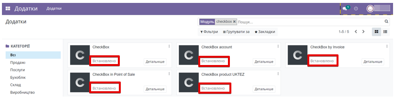
The "CheckBox" module does not work through the standard OdooBot user, so you need to log in as a real user to continue interacting with the system modules.
The main menu of the "CheckBox" module consists of the following sections:
*Receipts - displays a list of all receipts;
*Z-Report - a list of all Z-reports;
*X-Report - a list of all X-reports;
*Settings - the settings section of the main functionality of the "CheckBox" module. This tab is available for users with "CheckBox. Administrator" access rights.
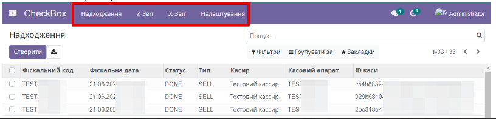
To start working with the module, you need to add a cashier to the Odoo system. To do this, go to the main menu "Checkbox" - "Settings" - "Cashier". Click the "Create" button.
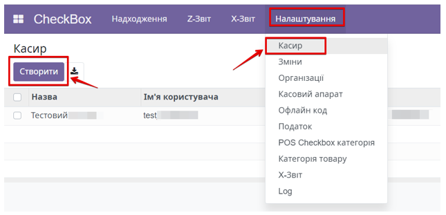
After entering all the data, click the "Save" button.
The next step is to click the "Update information" button to add the cashier to the system and synchronize the data with the Checkbox service. It is recommended to enable logging before start. To do this, you need to enable the "Is Log Enabled" function.
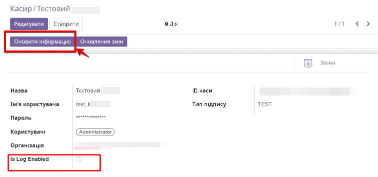
From the cashier's settings, you can also update the information on the current shift status. To do this, click the "Update shifts" button and go to the list of all shifts for this cashier. Click "Shifts".
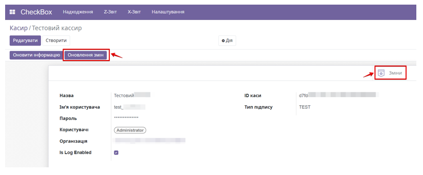
A shift (session) is a period of time, usually one day, during which the cashier sells through the Point of Sale.
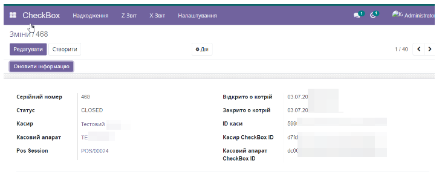
Shifts are opened automatically at the Point of Sale, but you can open a shift outside the Point of Sale. To do this, click the "Create" button. In the window for creating a new shift, select a cashier and a cash register. Click the "Update information" and "Save" buttons.
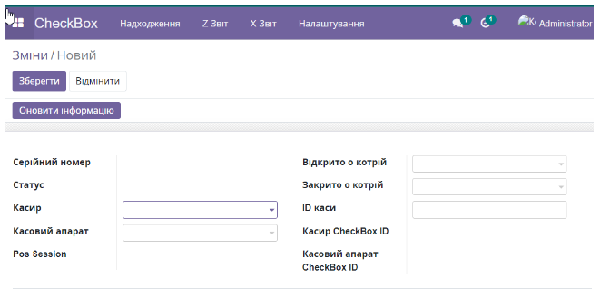
Next, you need to add a cash register to the Odoo system. Go to the Settings - Cash register menu and click the "Create" button. After adding all the data, click the "Update information" and "Save" buttons. After saving the data, additional information on the cash register is automatically pulled up from the Checkbox account.
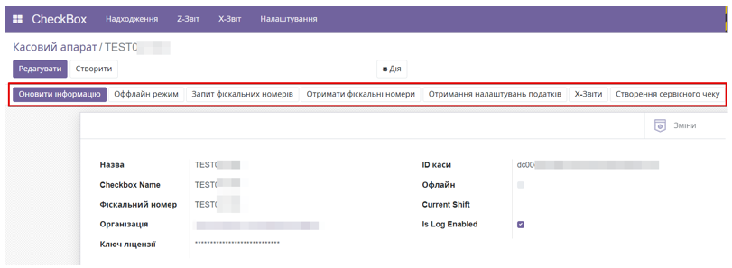
The third step is to create a "Journal" for accounting for funds. First of all, go to the "Add-ons" module and enter "l10n_ua" in the search bar. Install the financial journals module if it is not already installed.
Go to the "Invoicing" or "Accounts" module, the name depends on the version of Odoo, then to the "Settings" section - "Journals". Click the "Create" button. Specify the name and type of journal. Fill in the income and expense accounts.
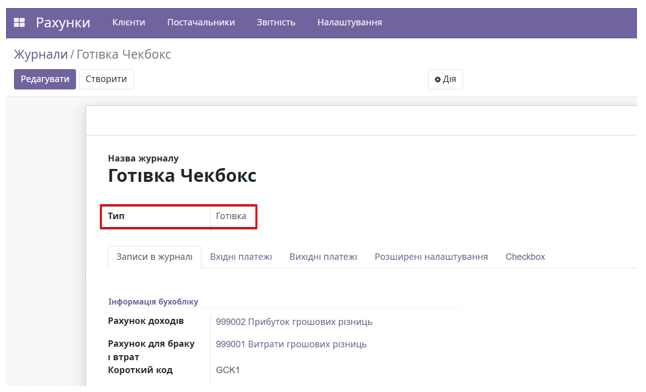
Go to the "Checkbox" tab and check the "Checkbox receipt" box. Specify the organization. Each point of sale should have its own set of journals in which payments will be recorded.
After filling in all the data, click the "Save" button.
The fourth and final step will be to familiarize yourself with the "Invoicing" module. Generate an invoice payment with fiscalization. To do this, go to the Invoicing menu, click the Customers tab, and select Invoices. Click the Create button. Fill in all the necessary data for the invoice. Save and confirm the invoice's creation. After that, click the Register payment button.
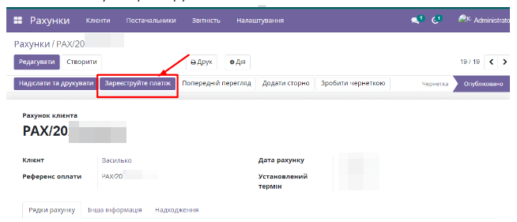
In the payment registration window, fill in all the fields and tabs, and click the "Create payment" button. In the invoice, the "Receipts" tab displays a record of fiscalization for this Account.
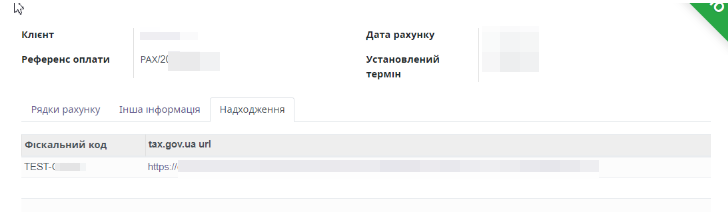